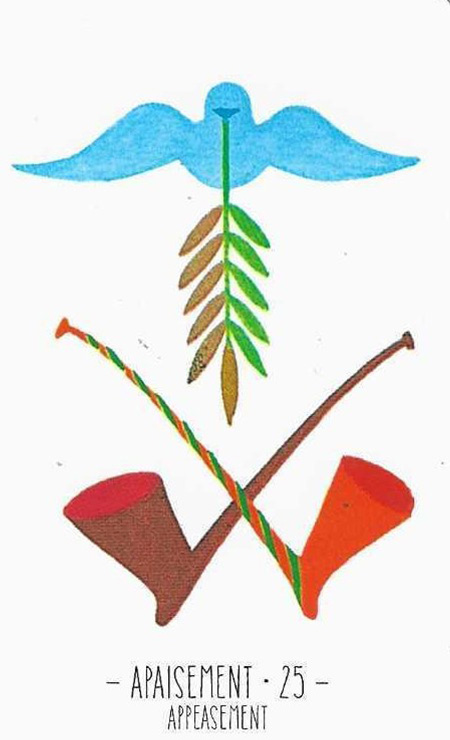

25
진정
Appeasement긍정

그림 읽기
올리브 가지를 문 평화의 비둘기와 X자로 교차된 두 개의 도끼. 도끼는 전투를 멈추고 평화를 이루는 데 쓰인 것으로 해석됩니다.
진정평화안정화해위로중화
핵심 내용
- 평화·화해·평온·진정·타협·위로·고요함
- 일시적인 연락, 좋은 소식이 올 수 있음
- 화해의 손길이 올 수 있음, 일로부터 얻는 기쁨
- 관계의 발전, 약혼이나 결혼, 결합
- 부정적인 카드를 억누르고 중화시키는 힘을 가진 카드
주요 메시지
평화와 화해 — 분쟁의 종식과 상호 이해·양보
안전과 재건 — 큰 위기 후의 회복과 재건
실생활 적용
중재와 대화 — 갈등 상황에서 중재자의 역할
개인적 화해 — 오해를 풀고 관계를 복원
학습 노트
토성 카드 중 유일하게 긍정 기운을 가진 카드입니다. 갈등이 심한 카드와 함께면 화해의 중요성을 더 강조합니다.
조합 메모


10번+4번+25번 = 삶의 부활, 균형 잡힌 평화로운 행복으로 복귀
25번+32번 = 화해와 열정의 강한 유대

11번+25번 = 새 출발에 협상으로 풀 문제